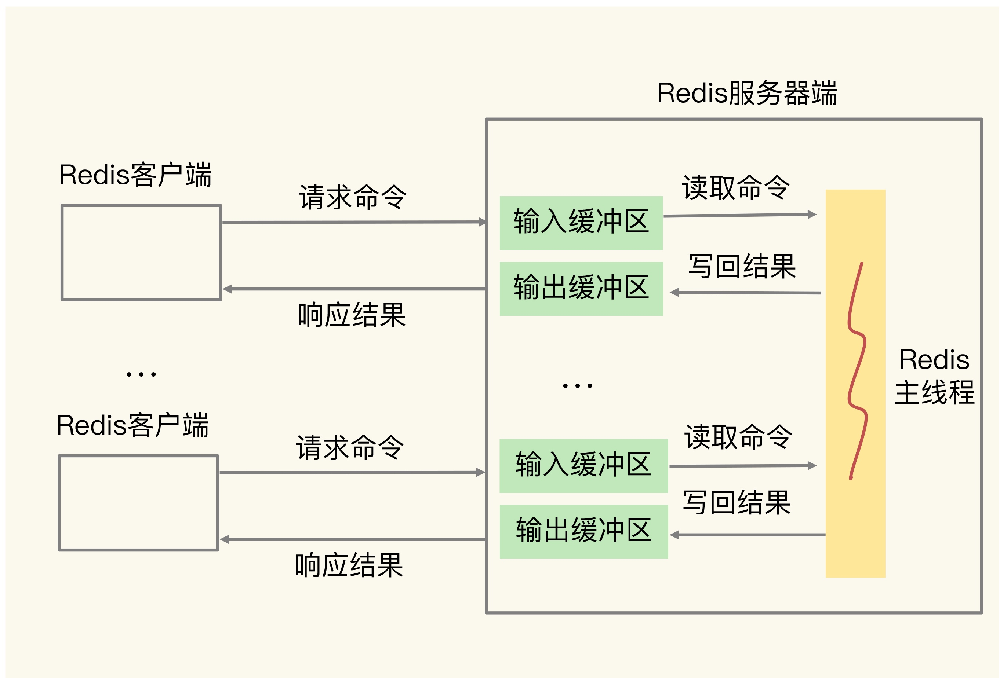

区分客户端和代理
- private 表示缓存只能在客户端保存，是用户“私有”的，不能放在代理上与别人共享。
- public 缓存完全开放，谁都可以存，谁都可以用
- proxy-revalidate只要求代理的缓存过期后必须验证，客户端不必回源
- no-transform禁止对缓存的数据进行优化
缓存属性
- max-stale max-stale”的意思是如果代理上的缓存过期了也可以接受，但不能过期太多，超过 x 秒也会不要
- min-fresh 意思是缓存必须有效，而且必须在 x 秒后依然有效
- only-if-cached 只接受代理缓存的数据，不接受源服务器的响应
- vary版本协商问题
- purge清理缓存
nginx对缓存的处理
- 将Vary的头部摘要写入缓存，不仅比较URI，也比较摘要
设置滑动窗口大小
- net.ipv4.tcp_window_scaling = 1
带宽时延积如何确定最大传输速度
- 飞行报文超过了 1MB，就一定会让网络过载，最终导致丢包
怎样调整缓冲区去适配滑动窗口
- 缓冲区动态调节功能
- 发送缓冲区 net.ipv4.tcp_wmem = 4096 16384 4194304
- 接收缓冲区 net.ipv4.tcp_moderate_rcvbuf = 1
- net.ipv4.tcp_mem = 88560 118080 177120
- 千万不要在 socket 上直接设置 SO_SNDBUF 或者 SO_RCVBUF，这样会关闭缓冲区的动态调整功能。
阻塞点
- 客户端：网络 IO，键值对增删改查操作，数据库操作；
- 磁盘：生成 RDB 快照，记录 AOF 日志，AOF 日志重写；
- 主从节点：主库生成、传输 RDB 文件，从库接收 RDB 文件、清空数据库、加载 RDB 文件；
- 切片集群实例：向其他实例传输哈希槽信息，数据迁移

客户端
- 集合全量查询和聚合操作
- bigkey 删除操作就是 Redis 的第二个阻塞点
- 清空数据库 flushdb&flushall
和磁盘交互时的阻塞点
切片集群实例交互时的阻塞点
- 使用了 Redis Cluster 方案，而且同时正好迁移的是 bigkey 的话，就会造成主线程的阻塞，因为 Redis Cluster 使用了同步迁移
删除和清空新命令
- UNLINK
- FLUSHDB ASYNC
- FLUSHALL ASYNC
CPU结构

- 一个 CPU 处理器会有 10 到 20 多个物理核。同时，为了提升服务器的处理能力，服务器上通常还会有多个 CPU 处理器

NUMA架构
- 在多 CPU 架构下，一个应用程序访问所在 Socket 的本地内存和访问远端内存的延迟并不一致，所以，我们也把这个架构称为非统一内存访问架构
绑定
- task-set
- taskset -c 0 ./redis-server
优化方案
- 一个 Redis 实例对应绑一个物理核
- 修改 Redis 源码，把子进程和后台线程绑到不同的 CPU 核上
思考题
- 在一台有 2 个 CPU Socket（每个 Socket 8 个物理核）的服务器上，我们部署了有 8 个实例的 Redis 切片集群（8 个实例都为主节点，没有主备关系），现在有两个方案：在同一个 CPU Socket 上运行 8 个实例，并和 8 个 CPU 核绑定；在 2 个 CPU Socket 上各运行 4 个实例，并和相应 Socket 上的核绑定。如果不考虑网络数据读取的影响，你会选择哪个方案呢？
- 在两个CPU Socket上各运行4个实例，并和相应Socket上的核绑定。这么做的原因主要从L3 Cache的命中率、内存利用率、避免使用到Swap这三个方面考虑
内存碎片
mem_fragmentation_ratio
- mem_fragmentation_ratio 大于 1 但小于 1.5
- mem_fragmentation_ratio 大于 1.5
内存碎片清理
- config set activedefrag yes
- active-defrag-ignore-bytes 100mb
- active-defrag-threshold-lower 10
- active-defrag-cycle-min 25
- active-defrag-cycle-max 75
缓存类型
- 只读缓存 视频缓存
- 读写缓存 商品大促
只读缓存是牺牲了一定的性能，优先保证数据库和缓存的一致性，它更适合对于一致性要求比较要高的业务场景。而如果对于数据库和缓存一致性要求不高，或者不存在并发修改同一个值的情况，那么使用读写缓存就比较合适
客户端输入输出缓冲区

缓冲区溢出
- 写入了 bigkey，比如一下子写入了多个百万级别的集合类型数据；
- 服务器端处理请求的速度过慢，例如，Redis 主线程出现了间歇性阻塞，无法及时处理正常发送的请求，导致客户端发送的请求在缓冲区越积越多。
- CLIENT LIST
- cmd 命令
- qbuf 表示输入缓冲区已经使用的大小
- qbuf-free，表示输入缓冲区尚未使用的大小
应对输出缓冲区溢出
- 服务器端返回 bigkey 的大量结果；
- 执行了 MONITOR 命令；
- 缓冲区大小设置得不合理。client-output-buffer-limit
主从集群中的缓冲区
复制缓冲区
- 客户端发送的写命令请求保存在复制缓冲区
- 复制缓冲区一旦溢出 复制缓冲区一旦发生溢出，主节点也会直接关闭和从节点进行复
- 制操作的连接，导致全量复制失败。
- 控制主节点保存的数据量大小
- 设置合理的复制缓冲区大小
- 控制从节点的数量
复制积压缓冲区
- 一旦从节点发生网络闪断，再次和主节点恢复连接后，从节点就会从复制积压缓冲区中，读取断连期间主节点接收到的写命令，进而进行增量同步
- 复制积压缓冲区溢出
- 复制积压缓冲区是一个大小有限的环形缓冲区。当主节点把复制积压缓冲区写满后，会覆盖缓冲区中的旧命令数据。如果从节点还没有同步这些旧命令数据，就会造成主从节点间重新开始执行全量复制